ここでは私達が訪れたパリにあるおすすめのレストランとカフェをご紹介していきます。
Le Petit Rétro
5 rue Mesnil 75016 Paris
サイトチェック
Figaroを読んでいて偶然見つけたレストラン。パリで美味しいBlanquette de veauが食べられるレストラン、ランキング７位とあり、無性に食べたくなり行ってまいりました。１９０４年から受け継がれているアール・デコの室内はかなりおしゃれです。歴史的建造物としても登録されているようです。

そしてお料理も大満足！こんな美味しいBlanquette de veauは初めて食べました。

主人はRaviole de langoustines。こちら絶対オススメ！

デザートは是非Les vraies chouquettesを！

Le Café de la Grande Epicerie（フレンチ）
38 rue de Sèvres 75007 Paris
ボン・マルシェに隣接しているグランド・エピスリーの２階にあるおしゃれなカフェです。お買い物の合間にランチはどうでしょうか。予約ができないので、お昼過ぎは結構混みます。
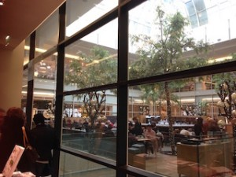

そしてこちら、からすみソースのバスタ！美味です。

Chamarre Montmartre（フレンチ）
52 RUE LAMARCK 75018 PARIS. MONTMARTRE
Tel: 01 42 55 05 42
サイトチェック
モンマルトルの裏手にある静かな通りで見つけたレストラン。とても雰囲気がよく、テラスで涼しい風に吹かれながらおいしいランチを。シェフはモーリシャス出身の方でおいしい魚料理が堪能できます。盛り付けも一皿一皿がとてもきれい。まず出てきたのがカリフラワーのスープ（おいしい！）、そしてRougetと呼ばれる地中海などでとれる魚のガスパッチョ、メインはMerlucciusというお魚、デザートのミントホワイトチョコも絶品！。モンマルトルへ行かれたら是非ランチでも！おすすめです。お昼のメニュー2品で23ユーロ、3品で29ユーロ。
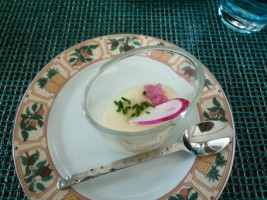
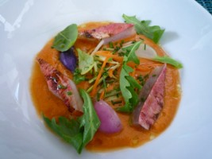
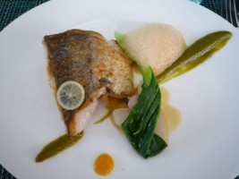
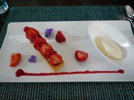
Le Calife （フランス料理）
セーヌに浮かぶレストランボート。夜景を楽しみながらディナー。輝くエッフェル塔やライトアップされたオルセー、ルーブルなどを横に、 優雅にお食事なんていかがでしょうか。夏はそよ風に吹かれ涼しい一時が楽しめます。要予約（サイトでできます）。
PRUNIER （フランス料理 魚介類専門）
16, Av.Victore Hugo – 75016 Paris
TEL:01 42 63 48 18
エレガントなアールデコデザインの店内。パリでは珍しいサーモン、魚介類を専門としています。 大好きなサーモンでおなかいっぱいになりました。。メニュー59€、アラカルトメニュｰはサイトでチェックを。
Mathusalem （フランス料理）
5 bis boulevard Exelmans – 75016 Paris
TEL: 01 42 88 10 73
パリ16区、メトロ10番線Exelmansエグゼルマンスを下車。セーヌ方向へ歩いていくと、ベルサイユ通りとぶつかります。そして ちょうど橋の脇に立つようにこのレストランがあります。ちょっとアンティｰクなインテリア。お料理もおいしかったです。フランス南西部の料理だそうです。 予算は30ユーロ~。私のおすすめはagneauアニョー（子羊のお肉）とピュレ（マッシュドポテト）。
Le Machon d’Henri （フランス リヨン料理）
8, rue Guisarde – 75006 Paris
01 43 29 08 70
サンジェルマンで見つけたリヨン料理を扱うレストラン。地元の人に人気という評判を聞き行って来ました。看板メニューは7時間煮込んだという羊の肉（柔らかい！）。この日、私た ちはアントレにos-a-moelle（6€/羊の骨のジェラチンのような部分をパンにつけて食べます)と、メインにsaucisson chaud comme a Lyon（12€/リヨンのソーセッジ)を注文。グルメな町リヨンのお料理を一度味わってみてはどうでしょうか。
Zen （日本料理）
8, rue de l’Echelle, 75001 Paris
TEL : 01 42 61 93 99
メニューも豊富なのですが、 何よりも清潔感があって落ち着きます。価格もお手ごろですし、日替わり弁当など工夫されていてとても美味しです。このお店に 来てから、オペラにあるほかの日本食レストランには行けなくなってしまった。。。
BENKEY 弁慶 （日本料理）
PARIS NOVOTEL TOUR EIFFEL
61 QUAI DE GRENELLE – 75015 PARIS
TEL: 01 40 58 20 00
パリ15区メトロ10番線、旧日航ホテル、現パリノボテルホテルの中。 セーヌ川沿いに立ち、眺めの良いテーブルでお食事。とても落ち着いた雰囲気です。メニューは60€から、アラカルトは100€前後を目安に。パフォーマン スが好評の鉄板焼きが有名なのだそうです。
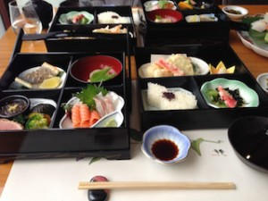
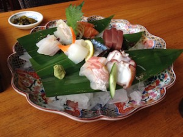
サ イトチェック
SUSHI GOURMET （寿司）
1, rue de l’Assomption – 75016 Paris
TEL: 01 45 27 09 02
おいしいお寿司という噂を聞いて行って来ました。CHIRASHI ROYALがオススメ！メトロでいうと9番線Ranelaghが近く、ちょうどラジオフランスの裏手にお店があります（カウンター席のみの小さなお店です）。お寿司が恋しくなったら行ってみてください。
DINO （イタリアン）
8,Chaussee de La Muette – 75016 Paris
TEL: 01 42 88 50 05
メトロ番線La Muetteのすぐそば。パンのヤマザキのお隣。店内だけでなく、味や盛り付けなどもちょっとおしゃれで、１６区のマダムたちが集まってきます。でもそんなに気取ってなくカジュアル。私が食べたのはイカとクルジェットのパスタ（16ユーロ）。オススメは Ravioli。特大のラビオリの生地の中にagneau子羊の肉とオリーブ、クルジェットが詰まっていて、かかっているトマトソースも美味！
LIVIO （イタリアン）
6 Rue de Longshamp – 92 200 NEUILLY/SEINE
パリ郊外（メトロ：ポンドゥヌイーユ）にあるイタリアンレストラン。入り口はとても小さいのですが中はとても広くイタリアンテイスト。 いつもこの広い店内がいっぱいになるほどの人気。スタッフはイタリア南部の方言で会話をしているので料理も保証付。だいたい10€~15€のメ ニューが並んでいます。
IANNELLO （イタリアン）
17 Boulevard Exelmans – 75016 Paris
TEL: 01 46 47 80 08
おしゃれで味も抜群。前菜のAntipasto Calabrese(15€)は生ハムと野菜のオリーブオイル漬け、Tagliatelle Alla Boscaiola(13€)はマッシュルームたっぷりのクリームパスタ、 主人の食べたRigatoni 4 Fromages (12€) はチーズたっぷりのパスタ。大満足のメニューでした。そしてデザートは大きなPanna Cotta(8€)。カフェグルマンを頼むと3種類のデザートが小鉢で、コヒーと一緒に出てきます（お腹に余裕のある場合はお徳かも）ディナーは予約したほうが確実。
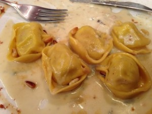


デザートは、パンナコッタがオススメです。
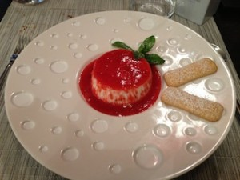
サイトチェック
Va Piano（イタリアン）
メトロ1番線の終点La Défenceの一角にあるパスタ/ピザのチェーン店です。映画館の近くです。とても人気のお店で平日お昼時はかなり混雑します。カフェテリア形式で、カウンターで注文してその場でパスタ/ピザを作ってくれます。運が悪いとかなり待つので、お昼であればなるべく早く行った方がいいですね。日曜日のお昼が比較的落ち着きます。
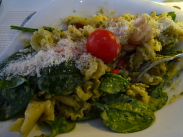
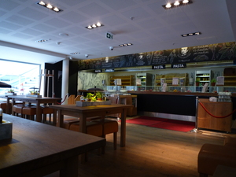
サイトチェック
Chez Ly （中華料理）
42 AV. CHARLES DE GAULLE 92200 NEUILLY-SUR-SEINE
Tel 01 55 62 33 88
フランス人の友達とよく食べに行く中華レストラン。そこそこの値段はしますが、美味しいです。メニューはたくさんあるのですが、いつも同じものばかり注文してしまいます・・・。
Rouleau de printemps (aux crevettes) エビの生春巻き、
Poulet au curry チキンタイ風カレー
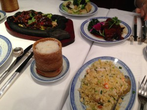
{kind=link}
そしてデザートはPerle de coco！
{kind=link}
Han Lim （韓国料理）
6 r Blainville PARIS – 75005 Paris
TEL: 01 43 54 62 74
メトロ10番線、Cardinal Lemoine。日本語フリーマガジンにもよく広告が出ていて、在仏日本人にも人気の韓国レストラン（日本語のメニュー有）。うわさの「鶏のにんにく唐揚げ」を食べてみたいと行ってきました。ねぎとにんにくが一緒に香ばしく揚げられていて、とてもおいしかったです。パ リに古くからあるお店でなじみ客が多いとか。
Thabthim Siam （タイ料理）
28 rue de Moscou 75008 Paris
Tel 01 43 87 62 56
スパイシーなものが食べたくなり見つけたタイレストラン。静かな通りにある小さなお店です。 私の選んだのはえびのレッドカレー。食べごたえのあるえびでした（満足）。デザートにでてきたライチのヨーグルトもおすすめ。金曜日の夜に行きましたが、ほぼ満席。
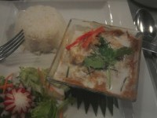